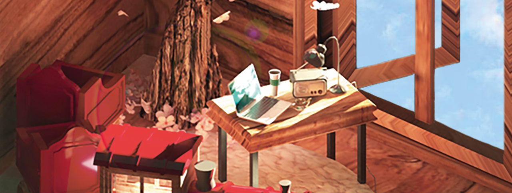
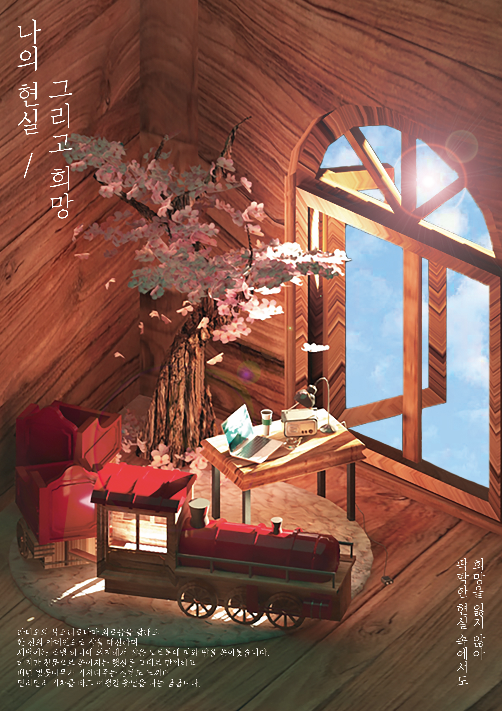
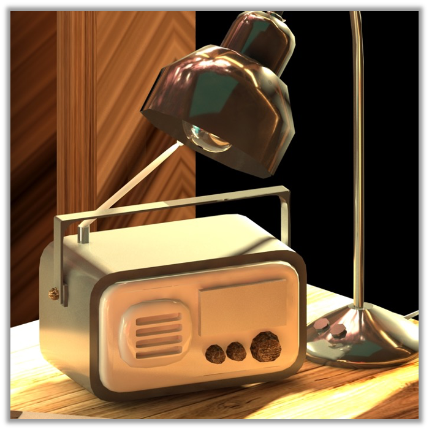
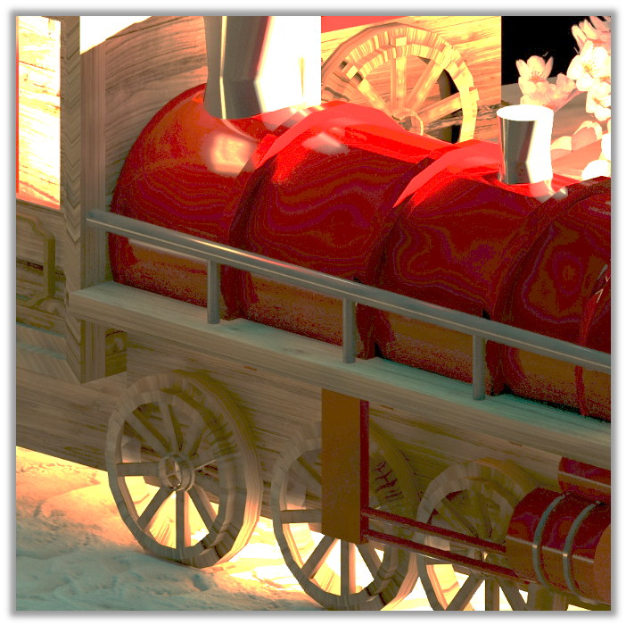
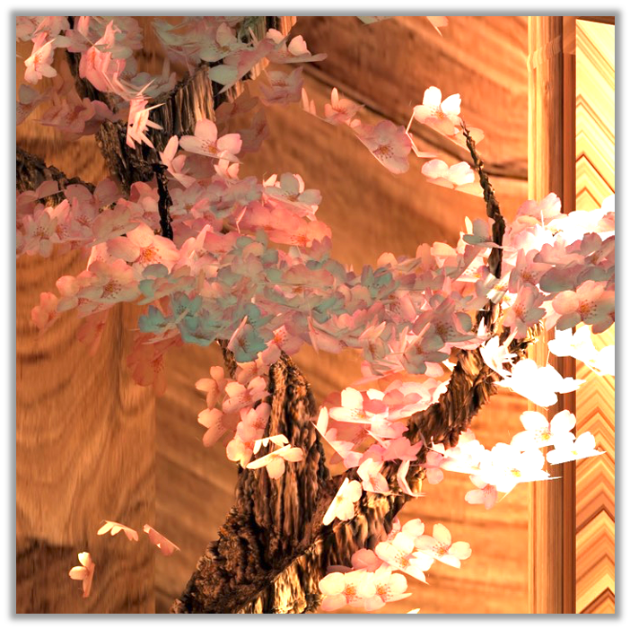

디자이너 허유진
포트폴리오
작업 의뢰하기
01. '혼잡도 안내' 앱서비스
|
02. 타이포그래피 웹 에세이
|
03. 나의 희망과 현실
|
04. 계원예대 아이콘 리뉴얼
|
05. H&M 패션 모션그래픽

나의 현실 / 그리고 희망
'팍팍한 현실 속에서도 희망을 잃지 않고 살아가는 나'를
3D MAX를 이용하여 표현해보았습니다.


01. 고장난 라디오와
늦은 밤까지 켜져있는 조명
02. 나의 피,땀,눈물이
녹아있는 노트북

03. 언젠가 가기를 꿈꾸는
기차여행
04. 고된 시험기간에도
언제나 만개한 벚꽃

3D MAX를 이용한 또다른 작업이 궁금하다면?